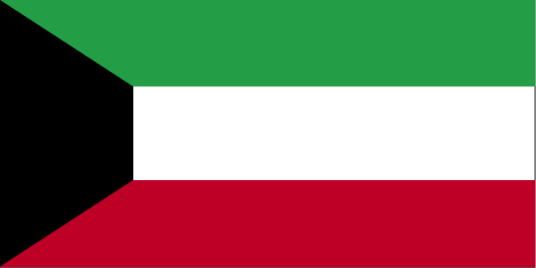

Middle East :: KUWAIT
Introduction :: KUWAIT
-
Kuwait has been ruled by the AL-SABAH dynasty since the 18th century. The threat of Ottoman invasion in 1899 prompted Amir Mubarak AL-SABAH to seek protection from Britain, ceding foreign and defense responsibility to Britain until 1961, when the country attained its independence. Kuwait was attacked and overrun by Iraq on 2 August 1990. Following several weeks of aerial bombardment, a US-led UN coalition began a ground assault on 23 February 1991 that liberated Kuwait in four days. Kuwait spent more than $5 billion to repair oil infrastructure damaged during 1990-91. The AL-SABAH family returned to power in 1991 and established one of the most independent legislatures in the Arab World. The country witnessed the historic election in 2009 of four women to its National Assembly. Amid the 2010-11 uprisings and protests across the Arab world, stateless Arabs, known as bidoon, staged small protests in early 2011 demanding citizenship, jobs, and other benefits available to Kuwaiti nationals. Youth activist groups' repeated rallies in 2011 for the dismissal of a prime minister seen as being corrupt, ultimately led to his resignation in late 2011. Demonstrations renewed in late 2012 in response to an Amiri decree amending the electoral law. The opposition, led by a coalition of Sunni Islamists, tribalists, some liberals, and myriad youth groups, largely boycotted legislative elections in 2012 and 2013, which ushered in a legislature more amenable to the government's agenda. However, the opposition, expressing strong opposition to the government’s fiscal reforms, participated in the November 2016 National Assembly and won almost half of the positions. Since coming to power in 2006, the Amir has dissolved the National Assembly on seven occasions (the Constitutional Court annulled the Assembly in June 2012 and again in June 2013) and shuffled the cabinet over a dozen times, usually citing political stagnation and gridlock between the legislature and the government.
Geography :: KUWAIT
-
Middle East, bordering the Persian Gulf, between Iraq and Saudi Arabia29 30 N, 45 45 EMiddle Easttotal: 17,818 sq kmland: 17,818 sq kmwater: 0 sq kmcountry comparison to the world: 158slightly smaller than New Jerseytotal: 475 kmborder countries (2): Iraq 254 km, Saudi Arabia 221 km499 kmterritorial sea: 12 nmdry desert; intensely hot summers; short, cool wintersflat to slightly undulating desert plainmean elevation: 108 melevation extremes: lowest point: Persian Gulf 0 mhighest point: 3.6 km W. of Al-Salmi Border Post 300 mpetroleum, fish, shrimp, natural gasagricultural land: 8.5%arable land 0.6%; permanent crops 0.3%; permanent pasture 7.6%forest: 0.4%other: 91.1% (2011 est.)105 sq km (2012)densest settlement is along the Persian Gulf, particularly in Kuwait City and on Bubiyan Island; significant population threads extend south and west along highways that radiate from the capital, particularly in the southern half of the countrysudden cloudbursts are common from October to April and bring heavy rain, which can damage roads and houses; sandstorms and dust storms occur throughout the year but are most common between March and Augustlimited natural freshwater resources; some of world's largest and most sophisticated desalination facilities provide much of the water; air and water pollution; desertificationparty to: Biodiversity, Climate Change, Climate Change-Kyoto Protocol, Desertification, Endangered Species, Environmental Modification, Hazardous Wastes, Law of the Sea, Ozone Layer Protectionsigned, but not ratified: Marine Dumpingstrategic location at head of Persian Gulf
People and Society :: KUWAIT
-
2,875,422 (July 2017 est.)note: Kuwait's Public Authority for Civil Information estimates the country's total population to be 4,183,658 for 2015, with immigrants accounting more than 69%country comparison to the world: 139noun: Kuwaiti(s)adjective: KuwaitiKuwaiti 31.3%, other Arab 27.9%, Asian 37.8%, African 1.9%, other 1.1% (includes European, North American, South American, and Australian) (2013 est.)Arabic (official), English widely spokenMuslim (official) 76.7%, Christian 17.3%, other and unspecified 5.9%note: represents the total population; about 69% of the population consists of immigrants (2013 est.)0-14 years: 25.02% (male 374,259/female 345,104)15-24 years: 15.1% (male 238,451/female 195,700)25-54 years: 52.27% (male 948,902/female 554,050)55-64 years: 5.07% (male 82,366/female 63,505)65 years and over: 2.54% (male 33,561/female 39,524) (2017 est.)total dependency ratio: 29.8youth dependency ratio: 27.1elderly dependency ratio: 2.7potential support ratio: 37.3 (2015 est.)total: 29.3 yearsmale: 30.4 yearsfemale: 27.4 years (2017 est.)country comparison to the world: 1231.46% (2017 est.)country comparison to the world: 8019.2 births/1,000 population (2017 est.)country comparison to the world: 842.2 deaths/1,000 population (2017 est.)country comparison to the world: 224-2.4 migrant(s)/1,000 population (2017 est.)country comparison to the world: 170densest settlement is along the Persian Gulf, particularly in Kuwait City and on Bubiyan Island; significant population threads extend south and west along highways that radiate from the capital, particularly in the southern half of the countryurban population: 98.4% of total population (2017)rate of urbanization: 2.29% annual rate of change (2015-20 est.)KUWAIT (capital) 2.779 million (2015)at birth: 1.05 male(s)/female0-14 years: 1.08 male(s)/female15-24 years: 1.22 male(s)/female25-54 years: 1.72 male(s)/female55-64 years: 1.31 male(s)/female65 years and over: 0.89 male(s)/femaletotal population: 1.41 male(s)/female (2016 est.)4 deaths/100,000 live births (2015 est.)country comparison to the world: 179total: 7 deaths/1,000 live birthsmale: 6.8 deaths/1,000 live birthsfemale: 7.2 deaths/1,000 live births (2017 est.)country comparison to the world: 162total population: 78.2 yearsmale: 76.8 yearsfemale: 79.6 years (2017 est.)country comparison to the world: 642.4 children born/woman (2017 est.)country comparison to the world: 843% of GDP (2014)country comparison to the world: 1821.95 physicians/1,000 population (2014)2.2 beds/1,000 population (2012)improved:urban: 99% of populationrural: 99% of populationtotal: 99% of populationunimproved:urban: 1% of populationrural: 1% of populationtotal: 1% of population (2015 est.)improved:urban: 100% of populationrural: 100% of populationtotal: 100% of populationunimproved:urban: 0% of populationrural: 0% of populationtotal: 0% of population (2015 est.)<.1% (2016 est.)<500 (2016 est.)<100 (2016 est.)37.9% (2016)country comparison to the world: 113% (2014)country comparison to the world: 120definition: age 15 and over can read and writetotal population: 95.7%male: 96.4%female: 94.5% (2016 est.)total: 13 yearsmale: 13 yearsfemale: 14 years (2013)total: 14.6%male: N/Afemale: N/A (2011 est.)country comparison to the world: 94
Government :: KUWAIT
-
conventional long form: State of Kuwaitconventional short form: Kuwaitlocal long form: Dawlat al Kuwaytlocal short form: Al Kuwaytetymology: the name derives from the capital city, which is from Arabic "al-Kuwayt" a diminutive of "kut" meaning "fortress encircled by water"constitutional monarchyname: Kuwait Citygeographic coordinates: 29 22 N, 47 58 Etime difference: UTC+3 (8 hours ahead of Washington, DC, during Standard Time)6 governorates (muhafazat, singular - muhafazah); Al Ahmadi, Al 'Asimah, Al Farwaniyah, Al Jahra', Hawalli, Mubarak al Kabir19 June 1961 (from the UK)National Day, 25 February (1950)history: approved and promulgated 11 November 1962amendments: proposed by the amir or supported by at least one-third of the National Assembly; passage requires two-thirds consent by the Assembly membership and promulgation by the amir; constitutional articles on the initiation, approval, and promulgation of general legislation cannot be amended (2016)mixed legal system consisting of English common law, French civil law, and Islamic religious lawhas not submitted an ICJ jurisdiction declaration; non-party state to the ICCtcitizenship by birth: nocitizenship by descent only: at least one parent must be a citizen of Kuwaitdual citizenship recognized: noresidency requirement for naturalization: not specified21 years of age and at least 20-year citizenship; universal; note - in early 2017, legislation was introduced to lower the voting age to 18 and instate suffrage for the armed forces and policechief of state: Amir SABAH al-Ahmad al-Jabir al-Sabah (since 29 January 2006); Crown Prince NAWAF al-Ahmad al-Jabir al-Sabah (born 25 June 1937)head of government: Prime Minister JABIR AL-MUBARAK al-Hamad al-Sabah (since 30 November 2011); First Deputy Prime Minister SABAH Khaled al-Hamad al-Sabah; Deputy Prime Ministers al-KHALD al-Jarrah al-Sabah (since 4 August 2013), MUHAMMAD AL-KHALID al-Hamad al-Sabah (since 4 August 2013, Abd al-Muhsin al-MADAJ (since January 2014)cabinet: Council of Ministers appointed by the prime minister, approved by the amirelections/appointments: amir chosen from within the ruling family, confirmed by the National Assembly; prime minister and deputy prime ministers appointed by the amirdescription: unicameral National Assembly or Majlis al-Umma (65 seats; 50 members directly elected in multi-seat constituencies by simple majority vote and 15 ex-officio members - cabinet ministers - appointed by the prime minister; members serve 4-year terms)elections: last held on 26 November 2016 (next to be held in 2020)election results: preliminary results - opposition groups including those linked to the Muslim Brotherhood and Salafists 24 seats, other 26highest court(s): Constitutional Court (consists of 5 judges); Supreme Court or Court of Cassation (organized into several circuits, each with 5 judges)judge selection and term of office: all Kuwaiti judges appointed by the Amir upon recommendation of the Supreme Judicial Council, a consultative body comprised of Kuwaiti judges and Ministry of Justice officialssubordinate courts: High Court of Appeal; Court of First Instance; Summary Courtnone; while the formation of political parties is not permitted, they are not forbidden by lawIslamists; merchants; political groups; secular liberals and pro-governmental deputies; Shia activists; tribal groupsABEDA, AfDB (nonregional member), AFESD, AMF, BDEAC, CAEU, CD, FAO, G-77, GCC, IAEA, IBRD, ICAO, ICC (national committees), ICRM, IDA, IDB, IFAD, IFC, IFRCS, IHO, ILO, IMF, IMO, IMSO, Interpol, IOC, IPU, ISO, ITSO, ITU, ITUC (NGOs), LAS, MIGA, NAM, OAPEC, OIC, OPCW, OPEC, Paris Club (associate), PCA, UN, UNCTAD, UNESCO, UNIDO, UNRWA, UNWTO, UPU, WCO, WFTU (NGOs), WHO, WIPO, WMO, WTOchief of mission: Ambassador SALIM al-Abdallah al-Jabir al-Sabah (since 10 October 2001)chancery: 2940 Tilden Street NW, Washington, DC 20008telephone: [1] (202) 966-0702FAX: [1] (202) 966-8468consulate(s) general: Los Angeleschief of mission: Ambassador Lawrence R. SILVERMAN (since 5 October 2016)embassy: Bayan 36302, Block 13, Al-Masjed Al-Aqsa Street (near the Bayan palace), Kuwait Citymailing address: P. O. Box 77 Safat 13001 Kuwait; or PSC 1280 APO AE 09880-9000telephone: [965] 2259-1001FAX: [965] 2538-6562three equal horizontal bands of green (top), white, and red with a black trapezoid based on the hoist side; colors and design are based on the Arab Revolt flag of World War I; green represents fertile fields, white stands for purity, red denotes blood on Kuwaiti swords, black signifies the defeat of the enemygolden falcon; national colors: green, white, red, blackname: "Al-Nasheed Al-Watani" (National Anthem)lyrics/music: Ahmad MUSHARI al-Adwani/Ibrahim Nasir al-SOULAnote: adopted 1978; the anthem is only used on formal occasions
Economy :: KUWAIT
-
Kuwait has a geographically small, but wealthy, relatively open economy with crude oil reserves of about 102 billion barrels - more than 6% of world reserves. Kuwaiti officials plan to increase production to 4 million barrels of oil equivalent per day by 2020. Petroleum accounts for over half of GDP, 92% of export revenues, and 90% of government income.In 2015, Kuwait, for the first time in 15 years, realized a budget deficit after decades of high oil prices; in 2016, the deficit grew to 16.5% of GDP. Kuwaiti authorities announced cuts to fuel subsidies in August 2016, provoking outrage among the public and National Assembly, and the Amir dissolved the government for the seventh time in ten years. Despite Kuwait’s dependence on oil, the government has cushioned itself against the impact of lower oil prices, by saving annually at least 10% of government revenue in the Fund for Future Generations.Kuwait has failed to diversify its economy or bolster the private sector, because of a poor business climate, a large public sector that employs about 76% of citizens, and an acrimonious relationship between the National Assembly and the executive branch that has stymied most economic reforms. The Kuwaiti Government has made little progress on its long-term economic development plan first passed in 2010. While the government planned to spend up to $104 billion over four years to diversify the economy, attract more investment, and boost private sector participation in the economy, many of the projects did not materialize because of an uncertain political situation or delays in awarding contracts.$303.7 billion (2016 est.)$292.6 billion (2015 est.)$283.6 billion (2014 est.)note: data are in 2016 dollarscountry comparison to the world: 55$110.9 billion (2016 est.)2.5% (2016 est.)2.1% (2015 est.)0.6% (2014 est.)country comparison to the world: 111$71,900 (2016 est.)$72,100 (2015 est.)$72,600 (2014 est.)note: data are in 2016 dollarscountry comparison to the world: 1125.1% of GDP (2016 est.)30.8% of GDP (2015 est.)50.2% of GDP (2014 est.)country comparison to the world: 44household consumption: 47.6%government consumption: 27.3%investment in fixed capital: 30.2%investment in inventories: 0%exports of goods and services: 50.1%imports of goods and services: -55.3% (2016 est.)agriculture: 0.4%industry: 59.6%services: 40% (2016 est.)fishpetroleum, petrochemicals, cement, shipbuilding and repair, water desalination, food processing, construction materials1.2% (2016 est.)country comparison to the world: 1392.612 millionnote: non-Kuwaitis represent about 60% of the labor force (2016 est.)country comparison to the world: 113agriculture: NA%industry: NA%services: NA%2.1% (2016 est.)3% (2015 est.)country comparison to the world: 31NA%lowest 10%: NA%highest 10%: NA%revenues: $47.46 billionexpenditures: $59.59 billion (2016 est.)43.2% of GDP (2016 est.)country comparison to the world: 29-11% of GDP (2016 est.)country comparison to the world: 20117.3% of GDP (2016 est.)9.2% of GDP (2015 est.)country comparison to the world: 1891 April - 31 March3.5% (2016 est.)3.3% (2015 est.)country comparison to the world: 1462.5% (31 December 2016)1.25% (31 December 2010)country comparison to the world: 1114.5% (31 December 2016 est.)4.3% (31 December 2015 est.)country comparison to the world: 150$31.87 billion (31 December 2016 est.)$30.95 billion (31 December 2015 est.)country comparison to the world: 61$116.9 billion (31 December 2016 est.)$113.8 billion (31 December 2015 est.)country comparison to the world: 55$98.92 billion (31 December 2016 est.)$98.87 billion (31 December 2015 est.)country comparison to the world: 56$81.78 billion (31 December 2016 est.)$83.13 billion (31 December 2015 est.)$99.77 billion (31 December 2014 est.)country comparison to the world: 44$-4.997 billion (2016 est.)$3.742 billion (2015 est.)country comparison to the world: 169$46.26 billion (2016 est.)$54.11 billion (2015 est.)country comparison to the world: 49oil and refined products, fertilizersSouth Korea 16.8%, China 14.4%, Japan 9.6%, India 9.2%, US 7.5%, Singapore 5.6% (2016)$30.82 billion (2016 est.)$30.96 billion (2015 est.)country comparison to the world: 61food, construction materials, vehicles and parts, clothingChina 14.1%, US 11.9%, UAE 8.3%, Japan 6.5%, Germany 6.2%, India 5.4%, Italy 5%, Saudi Arabia 4.4%, South Korea 4.4% (2016)$31.13 billion (31 December 2016 est.)$28.37 billion (31 December 2015 est.)country comparison to the world: 49$38.34 billion (31 December 2016 est.)$35.59 billion (31 December 2015 est.)country comparison to the world: 71$12.62 billion (31 December 2016 est.)$12.18 billion (31 December 2015 est.)country comparison to the world: 93$74.13 billion (31 December 2016 est.)$69.56 billion (31 December 2015 est.)country comparison to the world: 38Kuwaiti dinars (KD) per US dollar -0.3022 (2016 est.)0.3022 (2016 est.)0.3009 (2014 est.)0.2845 (2013 est.)0.28 (2012 est.)
Energy :: KUWAIT
-
population without electricity: 56,655electrification - total population: 98%electrification - urban areas: 98%electrification - rural areas: 93% (2012)63.84 billion kWh (2015 est.)country comparison to the world: 4654.11 billion kWh (2015 est.)country comparison to the world: 460 kWh (2016 est.)country comparison to the world: 1570 kWh (2016 est.)country comparison to the world: 16816 million kW (2016 est.)country comparison to the world: 50100% of total installed capacity (2016 est.)country comparison to the world: 100% of total installed capacity (2016 est.)country comparison to the world: 1220% of total installed capacity (2016 est.)country comparison to the world: 1830% of total installed capacity (2016 est.)country comparison to the world: 1912.924 million bbl/day (2016 est.)country comparison to the world: 91.656 million bbl/day (2014 est.)country comparison to the world: 90 bbl/day (2014 est.)country comparison to the world: 145101.5 billion bbl (1 January 2017 es)country comparison to the world: 6920,000 bbl/day (2016 est.)country comparison to the world: 23500,000 bbl/day (2016 est.)country comparison to the world: 35400,000 bbl/day (2013 est.)country comparison to the world: 2011,900 bbl/day (2016 est.)country comparison to the world: 13716.91 billion cu m (2015 est.)country comparison to the world: 3533.18 billion cu m (2015 est.)country comparison to the world: 360 cu m (2013 est.)country comparison to the world: 1334 billion cu m (2015 est.)country comparison to the world: 371.798 trillion cu m (1 January 2017 es)country comparison to the world: 21107 million Mt (2013 est.)country comparison to the world: 38
Communications :: KUWAIT
-
total subscriptions: 403,234subscriptions per 100 inhabitants: 14 (July 2016 est.)country comparison to the world: 97total: 5,392,806subscriptions per 100 inhabitants: 190 (July 2016 est.)country comparison to the world: 100general assessment: the quality of service is excellentdomestic: new telephone exchanges provide a large capacity for new subscribers; trunk traffic is carried by microwave radio relay, coaxial cable, and open-wire and fiber-optic cable; a 4G LTE mobile-cellular telephone system operates throughout Kuwait, and the country is well-supplied with pay telephonesinternational: country code - 965; linked to international submarine cable Fiber-Optic Link Around the Globe (FLAG); linked to Bahrain, Qatar, UAE via the Fiber-Optic Gulf (FOG) cable; coaxial cable and microwave radio relay to Saudi Arabia; satellite earth stations - 6 (3 Intelsat - 1 Atlantic Ocean and 2 Indian Ocean, 1 Inmarsat - Atlantic Ocean, and 2 Arabsat) (2017)state-owned TV broadcaster operates 4 networks and a satellite channel; several private TV broadcasters have emerged since 2003; satellite TV available with pan-Arab TV stations are especially popular; state-owned Radio Kuwait broadcasts on a number of channels in Arabic and English; first private radio station emerged in 2005; transmissions of at least 2 international radio broadcasters are available (2007).kwtotal: 2,219,972percent of population: 78.4% (July 2016 est.)country comparison to the world: 93
Transportation :: KUWAIT
-
number of registered air carriers: 3inventory of registered aircraft operated by air carriers: 31annual passenger traffic on registered air carriers: 3,655,366annual freight traffic on registered air carriers: 275,777,666 mt-km (2015)9K (2016)7 (2013)country comparison to the world: 168total: 4over 3,047 m: 12,438 to 3,047 m: 2914 to 1,523 m: 1 (2017)total: 31,524 to 2,437 m: 1under 914 m: 2 (2013)4 (2013)gas 261 km; oil 540 km; refined products 57 km (2013)total: 6,608 km (2010)country comparison to the world: 148total: 34by type: bulk carrier 2, carrier 3, container 6, liquefied gas 4, petroleum tanker 19registered in other countries: 45 (Bahamas 1, Bahrain 5, Comoros 1, Libya 1, Malta 3, Marshall Islands 2, Panama 12, Qatar 6, Saudi Arabia 4, UAE 10) (2010)country comparison to the world: 83major seaport(s): Ash Shu'aybah, Ash Shuwaykh, Az Zawr (Mina' Sa'ud), Mina' 'Abd Allah, Mina' al Ahmadi
Military and Security :: KUWAIT
-
4.83% of GDP (2015)3.65% of GDP (2014)3.27% of GDP (2013)3.41% of GDP (2012)3.5% of GDP (2011)country comparison to the world: 132Kuwaiti Land Forces (KLF), Kuwaiti Navy, Kuwaiti Air Force (Al-Quwwat al-Jawwiya al-Kuwaitiya; includes Kuwaiti Air Defense Force, KADF), Kuwaiti National Guard (KNG) (2013)17-21 years of age for voluntary military service; conscription suspended (2012)
Transnational Issues :: KUWAIT
-
Kuwait and Saudi Arabia continue negotiating a joint maritime boundary with Iran; no maritime boundary exists with Iraq in the Persian Gulfstateless persons: 93,000 (2016); note - Kuwait's 1959 Nationality Law defined citizens as persons who settled in the country before 1920 and who had maintained normal residence since then; one-third of the population, descendants of Bedouin tribes, missed the window of opportunity to register for nationality rights after Kuwait became independent in 1961 and were classified as bidun (meaning without); since the 1980s Kuwait's bidun have progressively lost their rights, including opportunities for employment and education, amid official claims that they are nationals of other countries who have destroyed their identification documents in hopes of gaining Kuwaiti citizenship; Kuwaiti authorities have delayed processing citizenship applications and labeled biduns as "illegal residents," denying them access to civil documentation, such as birth and marriage certificatescurrent situation: Kuwait is a destination country for men and women subjected to forced labor and, to a lesser degree, forced prostitution; men and women migrate from South and Southeast Asia, Egypt, the Middle East, and increasingly Africa to work in Kuwait, most of them in the domestic service, construction, and sanitation sectors; although most of these migrants enter Kuwait voluntarily, upon arrival some are subjected to conditions of forced labor by their sponsors and labor agents, including debt bondage; Kuwait’s sponsorship law restricts workers’ movements and penalizes them for running away from abusive workplaces, making domestic workers particularly vulnerable to forced labor in private homestier rating: Tier 3 - Kuwait does not fully comply with the minimum standards for the elimination of trafficking and is not making sufficient efforts to do so; although investigations into visa fraud rings lead to the referral of hundreds of people for prosecution, including complicit officials, the government has not prosecuted or convicted any suspected traffickers; authorities made no effort to enforce the prohibition against withholding workers’ passports, as mandated under Kuwaiti law; punishment of forced labor cases was limited to shutting down labor recruitment firms, assessing fines, and ordering the return of withheld passports and the paying of back-wages; the government made progress in victims’ protection by opening a high-capacity shelter for runaway domestic workers but still lacks formal procedures to identify and refer victims to care services (2015)